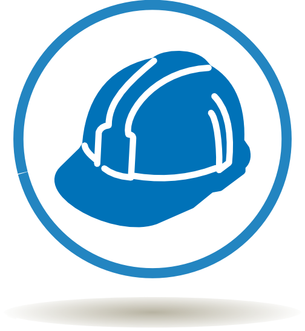

|  | Prevención de Riesgos Laborales (PRL) |
Introducción | Oficina | Almacén | Emergencias
Recyclon S.L.S. tiene el compromiso de garantizar un entorno de trabajo seguro y saludable para todo su equipo humano. La prevención de riesgos laborales es una prioridad fundamental.
El objetivo de este estudio es detallar los riesgos específicos de los puestos de trabajo en Recyclon y las medidas preventivas obligatorias.
Asociados al uso de Pantallas de Visualización de Datos (PVD) y las posturas estáticas prolongadas.
Derivados de la organización del trabajo y la carga mental.
El movimiento de material y mobiliario de oficina requiere atención y el cumplimiento estricto de los procedimientos.
Caídas y Golpes Mantener pasillos libres de obstáculos, utilizar señalización adecuada y garantizar una buena iluminación. Sobreesfuerzos por Manipulación Manual de Cargas Utilizar equipos auxiliares (carretillas, traspaletas) para mover cargas pesadas y aplicar la técnica de levantamiento doblando las rodillas, no la espalda
Equipo de Protección Individual (EPI) Obligatorio: Calzado de seguridad.
El plan de actuación ante una emergencia (incendio, evacuación, etc.) es el siguiente: